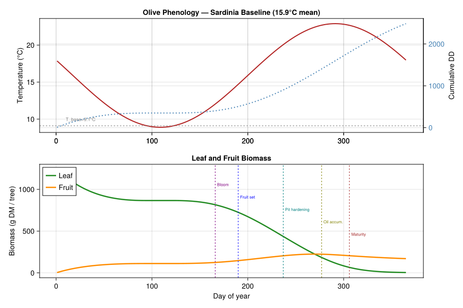
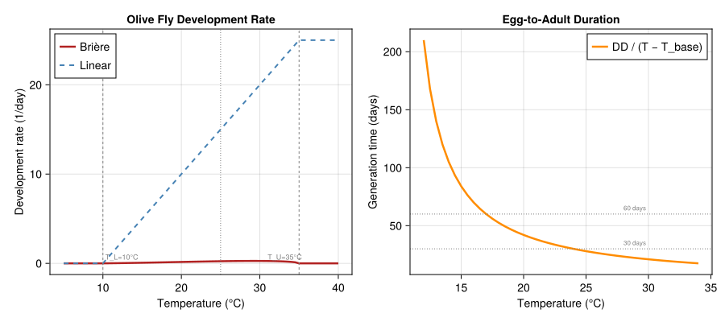
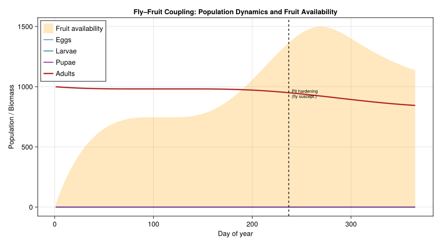
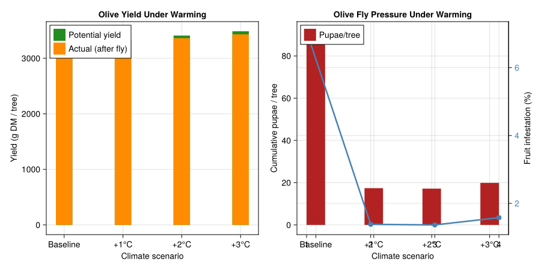
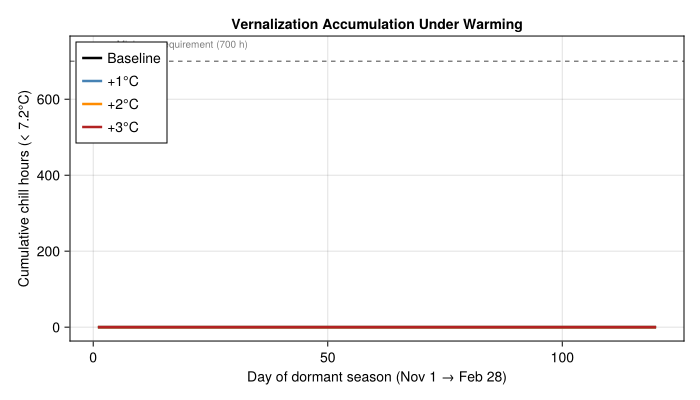

Olive–Olive Fly System Under Climate Warming
PhysiologicallyBasedDemographicModels.jl
- Introduction
- Olive Plant Model
- Olive Fly Model
- Implementation
- Seasonal Dynamics
- Climate Warming Analysis
- Parameter Sources
- Discussion
- References
Primary reference: (Ponti et al. 2009).
Introduction
The olive (Olea europaea L.) is the iconic crop of the Mediterranean Basin, with approximately 10 million hectares in cultivation across Southern Europe, North Africa, and the Middle East. Olive production is tightly coupled to climate — the tree requires mild, wet winters for vernalization and warm, dry summers for fruit maturation and oil accumulation. Climate change threatens to reorganize the geography of olive cultivation by altering both plant physiology and pest pressure simultaneously.
The olive fly (Bactrocera oleae Gmelin) is the most economically important pest of olives worldwide, causing an estimated $800 million in annual losses globally. The fly is host-specific: females oviposit exclusively in olive fruit, and larvae develop inside the drupe, causing direct yield loss and degrading oil quality through elevated free fatty acids and peroxide values. Because the fly’s lifecycle is intimately linked to fruit phenology, any climate-driven shift in olive development directly reshapes the temporal window of pest vulnerability.
This vignette builds a physiologically based demographic model (PBDM) of the olive–olive fly bitrophic system in the context of Mediterranean island climates, following the analysis of Ponti, Cossu, and Gutierrez (2009) who used weather-driven simulations across 48 Sardinian weather stations and three warming scenarios (+1 °C, +2 °C, +3 °C) to evaluate olive yield, fly population dynamics, and fruit infestation risk. Sardinia, the second-largest Mediterranean island, provides an ideal bounded geographic system with strong climate gradients — from maritime-buffered coasts to continental-influenced interior mountains — for studying crop–pest interactions under warming.
Key references:
- Ponti, L., Cossu, Q.A., and Gutierrez, A.P. (2009). Climate warming effects on the Olea europaea – Bactrocera oleae system in Mediterranean islands: Sardinia as an example. Global Change Biology 15:2874–2884.
- Gutierrez, A.P., Ponti, L., and Cossu, Q.A. (2009). Effects of climate warming on olive and olive fly (Bactrocera oleae (Gmelin)) in California and Italy. Climatic Change 95:195–217.
- Ponti, L., Gutierrez, A.P., Ruti, P.M., and Dell’Aquila, A. (2014). Fine-scale ecological and economic assessment of climate change on olive in the Mediterranean Basin reveals winners and losers. PNAS 111:5598–5603.
- Tzanakakis, M.E. (2003). Seasonal development and dormancy of insects and mites feeding on olive: a review. Netherlands Journal of Zoology 52:87–224.
- Wang, J.Y., Gutierrez, A.P., Ponti, L., and Cossu, Q.A. (2009). Modeling the biology and ecology of Bactrocera oleae: a physiologically based approach. In: Proceedings of the International Olive Council.
Olive Plant Model
Phenology and Vernalization
Olive phenological development follows a degree-day model with a base temperature of 9.1 °C (Ponti et al. 2009). Key milestones from budburst through harvest are tracked as cumulative thermal time. Critically, olive flowering requires prior vernalization — accumulated chilling below 7.2 °C during winter dormancy. In Sardinia, vernalization is typically satisfied across all locations (600–1000 chill hours), but warming may erode this margin at low-elevation coastal sites.
Bloom timing shifts approximately 9 days earlier per 1 °C warming, which has cascading effects: earlier bloom exposes flowers to spring frost risk, and earlier fruit set extends the window of fly susceptibility during the hottest summer months.
using PhysiologicallyBasedDemographicModels
using CairoMakie
# --- Olive phenology parameters (Ponti et al. 2009; Gutierrez et al. 2009) ---
const OLIVE_T_BASE = 9.1 # °C — base temperature for degree-day accumulation
const OLIVE_T_UPPER = 40.0 # °C — upper development threshold
const DD_BLOOM = 400.0 # DD above 9.1°C from Jan 1 to bloom
const DD_FRUIT_SET = 500.0 # DD to fruit set
const DD_PIT_HARDEN = 900.0 # DD to pit hardening (onset of fly susceptibility)
const DD_OIL_ACCUM = 1400.0 # DD to oil accumulation phase
const DD_MATURITY = 1800.0 # DD to fruit maturity / harvest
# Vernalization parameters
const VERN_T_THRESHOLD = 7.2 # °C — chill accumulation threshold
const VERN_REQUIREMENT = 700.0 # Chill hours below threshold for flowering
# Development rate model
olive_dev = LinearDevelopmentRate(OLIVE_T_BASE, OLIVE_T_UPPER)
# Sardinia baseline climate: Alghero (representative coastal site)
# Mean 15.9°C, amplitude 7.0°C (Min avg 11.6°C, Max avg 20.1°C)
sardinia_weather = SinusoidalWeather(15.9, 7.0; phase=200.0, radiation=20.0)
# Demonstrate development rate across the temperature range
println("Olive development rate (DD/day) at representative temperatures:")
println("="^55)
for T in [5.0, 9.1, 15.0, 20.0, 25.0, 30.0, 35.0]
dd = degree_days(olive_dev, T)
println(" T = $(lpad(T, 5))°C → $(round(dd, digits=2)) DD/day")
endOlive development rate (DD/day) at representative temperatures:
=======================================================
T = 5.0°C → 0.0 DD/day
T = 9.1°C → 0.0 DD/day
T = 15.0°C → 5.9 DD/day
T = 20.0°C → 10.9 DD/day
T = 25.0°C → 15.9 DD/day
T = 30.0°C → 20.9 DD/day
T = 35.0°C → 25.9 DD/dayCarbon Balance: Photosynthesis and Respiration
Olive carbon assimilation follows a Frazer-Gilbert functional response to photosynthetically active radiation (PAR), where the demand for carbon is set by potential growth rate and the supply comes from intercepted light. Net photosynthesis peaks near 25 °C and declines at temperature extremes.
Maintenance respiration follows a Q10 relationship (Q10 ≈ 2.0, reference temperature 20 °C), meaning respiration doubles for every 10 °C increase. This creates a critical carbon balance constraint under warming: higher temperatures simultaneously increase respiratory demand and (above the optimum) decrease photosynthetic supply.
# --- Carbon balance components ---
# Frazer-Gilbert functional response for light acquisition
olive_light = FraserGilbertResponse(0.75)
# Q10 respiration for olive maintenance
# 1.5% of dry matter per day at 20°C, Q10 = 2.0
olive_resp = Q10Respiration(0.015, 2.0, 20.0)
# Demonstrate carbon balance across temperatures
println("\nOlive carbon balance components:")
println("="^70)
println(" Temp (°C) | Photo rate | Resp rate | Net C gain | Resp/Photo")
println("-"^70)
for T in [10.0, 15.0, 20.0, 25.0, 30.0, 35.0, 38.0]
# Photosynthesis: bell curve peaking at ~25°C
photo_rate = max(0.0, 0.035 * (1 - ((T - 25.0) / 15.0)^2))
supply = photo_rate * 1000.0 # g C/tree/day
# PAR acquisition via Frazer-Gilbert
par_supply = 20.0 * (T > 5.0 ? 1.0 : 0.0)
par_demand = 25.0
par_acquired = acquire(olive_light, par_supply, par_demand)
# Respiration
resp = respiration_rate(olive_resp, T) * 1000.0
net = supply - resp
ratio = supply > 0 ? resp / supply : Inf
println(" $(lpad(round(T, digits=0), 6)) | " *
"$(lpad(round(supply, digits=1), 8)) | " *
"$(lpad(round(resp, digits=1), 8)) | " *
"$(lpad(round(net, digits=1), 8)) | " *
"$(round(ratio, digits=3))")
endOlive carbon balance components:
======================================================================
Temp (°C) | Photo rate | Resp rate | Net C gain | Resp/Photo
----------------------------------------------------------------------
10.0 | 0.0 | 7.5 | -7.5 | Inf
15.0 | 19.4 | 10.6 | 8.8 | 0.545
20.0 | 31.1 | 15.0 | 16.1 | 0.482
25.0 | 35.0 | 21.2 | 13.8 | 0.606
30.0 | 31.1 | 30.0 | 1.1 | 0.964
35.0 | 19.4 | 42.4 | -23.0 | 2.182
38.0 | 8.7 | 52.2 | -43.5 | 5.996Vegetative and Reproductive Tissue
The olive canopy and fruit are modeled as distributed-delay populations with age–mass structure. Vegetative tissue (leaves and shoots) represents the long-lived evergreen canopy with slow turnover. Reproductive tissue (fruit) develops from bloom through harvest over approximately 1400 DD.
Carbon allocation follows a priority hierarchy using MetabolicPool: maintenance respiration → vegetative growth → fruit development → reserves. Under heat or drought stress, fruit allocation is curtailed first, which is the physiological mechanism underlying yield reduction in hot years.
k = 25 # Substages (Erlang shape parameter)
# Vegetative tissue: long-lived evergreen canopy
leaf_delay = DistributedDelay(k, 2000.0; W0=50.0) # Leaves (g DM), ~2 yr turnover
shoot_delay = DistributedDelay(k, 1500.0; W0=30.0) # Current-year shoots
root_delay = DistributedDelay(k, 2500.0; W0=40.0) # Root system
# Reproductive tissue: olive fruit development (bloom → harvest ≈ 1400 DD)
fruit_delay = DistributedDelay(k, 1400.0; W0=0.0) # Fruit (starts at bloom)
# Assemble olive canopy population
olive_stages = [
LifeStage(:leaf, leaf_delay, olive_dev, 0.0005), # Low attrition (evergreen)
LifeStage(:shoot, shoot_delay, olive_dev, 0.0008),
LifeStage(:root, root_delay, olive_dev, 0.0003),
LifeStage(:fruit, fruit_delay, olive_dev, 0.001), # Includes natural fruit drop
]
olive = Population(:olive, olive_stages)
println("\nOlive canopy population structure:")
println(" Stages: ", n_stages(olive))
println(" Substages: ", n_substages(olive))
println(" Initial DM: ", round(total_population(olive), digits=1), " g/tree")Olive canopy population structure:
Stages: 4
Substages: 100
Initial DM: 3000.0 g/treeMetabolic Pool: Supply-Demand Carbon Allocation
Under heat stress, olive trees must allocate limited photosynthate among competing sinks. We model this priority-based allocation using MetabolicPool to demonstrate how warming progressively starves fruit development.
# --- Metabolic pool under temperature stress ---
println("\nPhotosynthate allocation under temperature stress:")
println("="^75)
println(" Temp | Supply | Maint. | Veg. | Root | Fruit | Reserve | S/D")
println("-"^75)
for T in [12.0, 18.0, 22.0, 25.0, 30.0, 35.0, 38.0]
# Photosynthesis peaks ~25°C, declines at extremes
photo_rate = max(0.0, 0.035 * (1 - ((T - 25.0) / 15.0)^2))
supply = photo_rate * 1000.0 # g C/tree/day
# Maintenance respiration (Q10)
maint = respiration_rate(olive_resp, T) * 1000.0
# Growth demands scaled by temperature
veg_demand = max(0.0, 8.0 * (T - OLIVE_T_BASE) / 20.0)
root_demand = max(0.0, 4.0 * (T - OLIVE_T_BASE) / 20.0)
fruit_demand = T > 15.0 ? 12.0 : 0.0
reserve = 3.0
pool = MetabolicPool(supply,
[maint, veg_demand, root_demand, fruit_demand, reserve],
[:maintenance, :vegetative, :root, :fruit, :reserves])
alloc = allocate(pool)
sdi = supply_demand_index(pool)
println(" $(lpad(round(T, digits=0), 4))°C | " *
"$(lpad(round(supply, digits=1), 5)) | " *
"$(lpad(round(alloc[1], digits=1), 5)) | " *
"$(lpad(round(alloc[2], digits=1), 5)) | " *
"$(lpad(round(alloc[3], digits=1), 5)) | " *
"$(lpad(round(alloc[4], digits=1), 5)) | " *
"$(lpad(round(alloc[5], digits=1), 5)) | " *
"$(round(sdi, digits=3))")
endPhotosynthate allocation under temperature stress:
===========================================================================
Temp | Supply | Maint. | Veg. | Root | Fruit | Reserve | S/D
---------------------------------------------------------------------------
12.0°C | 8.7 | 8.6 | 0.1 | 0.0 | 0.0 | 0.0 | 0.652
18.0°C | 27.4 | 13.1 | 3.6 | 1.8 | 9.0 | 0.0 | 0.82
22.0°C | 33.6 | 17.2 | 5.2 | 2.6 | 8.6 | 0.0 | 0.841
25.0°C | 35.0 | 21.2 | 6.4 | 3.2 | 4.2 | 0.0 | 0.765
30.0°C | 31.1 | 30.0 | 1.1 | 0.0 | 0.0 | 0.0 | 0.541
35.0°C | 19.4 | 19.4 | 0.0 | 0.0 | 0.0 | 0.0 | 0.266
38.0°C | 8.7 | 8.7 | 0.0 | 0.0 | 0.0 | 0.0 | 0.103Vernalization and Flowering
Olive flower bud initiation requires sufficient winter chilling. We track cumulative chill hours below 7.2 °C across the dormant season (November– February) and evaluate how warming erodes the vernalization margin.
# --- Vernalization accumulation under warming scenarios ---
println("\nVernalization: chill hour accumulation (Nov–Feb):")
println("="^65)
println(" Scenario | Chill hours | % of requirement | Status")
println("-"^65)
for (label, ΔT) in [("Baseline", 0.0), ("+1°C", 1.0), ("+2°C", 2.0), ("+3°C", 3.0)]
sw = SinusoidalWeather(15.9 + ΔT, 7.0; phase=200.0, radiation=20.0)
chill_hours = 0.0
# Dormant season: November (day 305) through February (day 59 next year)
for d in vcat(305:365, 1:59)
w = get_weather(sw, d)
# Approximate hourly temperatures from daily mean
for h in 1:24
T_hour = w.T_mean + 3.0 * sin(2π * (h - 6) / 24)
if T_hour < VERN_T_THRESHOLD
chill_hours += 1.0
end
end
end
pct = chill_hours / VERN_REQUIREMENT * 100
status = chill_hours >= VERN_REQUIREMENT ? "✓ Satisfied" : "✗ Insufficient"
println(" $(rpad(label, 13)) | $(lpad(round(chill_hours, digits=0), 8)) | " *
"$(lpad(round(pct, digits=1), 12))% | $status")
endVernalization: chill hour accumulation (Nov–Feb):
=================================================================
Scenario | Chill hours | % of requirement | Status
-----------------------------------------------------------------
Baseline | 0.0 | 0.0% | ✗ Insufficient
+1°C | 0.0 | 0.0% | ✗ Insufficient
+2°C | 0.0 | 0.0% | ✗ Insufficient
+3°C | 0.0 | 0.0% | ✗ InsufficientOlive Fly Model
Development: Nonlinear Temperature Response
The olive fly (B. oleae) has four developmental stages: egg, three larval instars (combined), pupa, and adult. Development follows a Brière nonlinear curve, which captures the characteristic left-skewed response with a sharp decline near the upper lethal temperature. The fly has a lower developmental threshold of approximately 10 °C and an upper threshold near 35 °C, with optimal development around 25 °C (Tzanakakis 2003; Wang et al. 2009).
Degree-day requirements (above 10 °C) from Gutierrez et al. (2009):
| Stage | DD requirement | Duration at 25°C |
|---|---|---|
| Egg | ~50 DD | ~3 days |
| Larva | ~170 DD | ~11 days |
| Pupa | ~200 DD | ~13 days |
| Adult | ~500 DD | ~33 days |
| Total | ~920 DD | ~60 days |
# --- Olive fly development parameters ---
const FLY_T_BASE = 10.0 # °C — lower developmental threshold
const FLY_T_UPPER = 35.0 # °C — upper lethal temperature
const FLY_T_OPT = 25.0 # °C — optimal development temperature
const FLY_BRIERE_A = 2.0e-4 # Brière rate parameter
# Degree-day requirements (above 10°C)
const FLY_DD_EGG = 50.0
const FLY_DD_LARVA = 170.0
const FLY_DD_PUPA = 200.0
const FLY_DD_ADULT = 500.0
# Nonlinear (Brière) development rate for the olive fly
fly_dev = BriereDevelopmentRate(FLY_BRIERE_A, FLY_T_BASE, FLY_T_UPPER)
# Compare with linear model
fly_linear = LinearDevelopmentRate(FLY_T_BASE, FLY_T_UPPER)
println("Olive fly development rate (Brière vs Linear):")
println("="^60)
println(" Temp (°C) | Brière rate | Linear rate | Ratio")
println("-"^60)
for T in [10.0, 15.0, 20.0, 25.0, 28.0, 30.0, 33.0, 35.0]
r_b = development_rate(fly_dev, T)
r_l = development_rate(fly_linear, T)
ratio = r_l > 0 ? r_b / r_l : 0.0
println(" $(lpad(T, 6)) | $(lpad(round(r_b, digits=5), 9)) | " *
"$(lpad(round(r_l, digits=4), 9)) | $(round(ratio, digits=3))")
endOlive fly development rate (Brière vs Linear):
============================================================
Temp (°C) | Brière rate | Linear rate | Ratio
------------------------------------------------------------
10.0 | 0.0 | 0.0 | 0.0
15.0 | 0.06708 | 5.0 | 0.013
20.0 | 0.15492 | 10.0 | 0.015
25.0 | 0.23717 | 15.0 | 0.016
28.0 | 0.26669 | 18.0 | 0.015
30.0 | 0.26833 | 20.0 | 0.013
33.0 | 0.21468 | 23.0 | 0.009
35.0 | 0.0 | 25.0 | 0.0Temperature-Dependent Mortality
High summer temperatures are a key mortality factor for the olive fly, especially for eggs and larvae developing inside sun-exposed fruit. Temperatures above 30 °C substantially increase immature mortality, and sustained periods above 35 °C can eliminate entire cohorts within fruit. This is the primary mechanism by which warming reduces fly pressure in already-hot Mediterranean lowlands such as the Campidano Valley in southern Sardinia.
# --- Temperature-dependent mortality functions ---
# Immature mortality (eggs and larvae in fruit): U-shaped, low at 20-28°C
function fly_immature_mortality(T)
if T < FLY_T_BASE
return 0.05 # Cold mortality
elseif T > 33.0
return 0.02 * (T - 30.0)^2 # Rapid increase above 30°C
else
T_opt_mort = 24.0
return 0.005 + 0.001 * ((T - T_opt_mort) / 10.0)^2
end
end
# Adult mortality: increases at extremes, reproductive dormancy > 30°C
function fly_adult_mortality(T)
if T < FLY_T_BASE
return 0.02
elseif T > 30.0
return 0.008 + 0.003 * (T - 30.0) # Gradual increase
else
return 0.003 + 0.0005 * abs(T - 22.0)
end
end
println("\nOlive fly temperature-dependent mortality:")
println("="^55)
println(" Temp (°C) | Immature μ/day | Adult μ/day | Ratio")
println("-"^55)
for T in [10.0, 15.0, 20.0, 25.0, 28.0, 30.0, 33.0, 35.0, 38.0]
μ_i = fly_immature_mortality(T)
μ_a = fly_adult_mortality(T)
println(" $(lpad(round(T, digits=0), 6)) | " *
"$(lpad(round(μ_i, digits=4), 12)) | " *
"$(lpad(round(μ_a, digits=4), 9)) | " *
"$(round(μ_i / μ_a, digits=2))")
endOlive fly temperature-dependent mortality:
=======================================================
Temp (°C) | Immature μ/day | Adult μ/day | Ratio
-------------------------------------------------------
10.0 | 0.007 | 0.009 | 0.77
15.0 | 0.0058 | 0.0065 | 0.89
20.0 | 0.0052 | 0.004 | 1.29
25.0 | 0.005 | 0.0045 | 1.11
28.0 | 0.0052 | 0.006 | 0.86
30.0 | 0.0054 | 0.007 | 0.77
33.0 | 0.0058 | 0.017 | 0.34
35.0 | 0.5 | 0.023 | 21.74
38.0 | 1.28 | 0.032 | 40.0Four-Stage Lifecycle
The olive fly lifecycle is modeled with four distributed-delay stages. The overwintering generation emerges as adults in spring; 2–4 overlapping generations can develop per season depending on climate. Fecundity is temperature-dependent (200–400 eggs per female) but is gated by fruit availability — oviposition can only occur when olive fruit is present and susceptible (post pit-hardening, ~900 DD above 9.1 °C on the olive phenology scale).
k_fly = 20 # Substages per stage
# Stage durations (DD above 10°C) from Gutierrez et al. (2009) / Wang et al. (2009)
fly_stages = [
LifeStage(:egg, DistributedDelay(k_fly, FLY_DD_EGG; W0=0.0), fly_dev, 0.010),
LifeStage(:larva, DistributedDelay(k_fly, FLY_DD_LARVA; W0=0.0), fly_dev, 0.008),
LifeStage(:pupa, DistributedDelay(k_fly, FLY_DD_PUPA; W0=0.0), fly_dev, 0.005),
LifeStage(:adult, DistributedDelay(k_fly, FLY_DD_ADULT; W0=0.0), fly_dev, 0.003),
]
fly = Population(:olive_fly, fly_stages)
println("\nOlive fly lifecycle structure:")
println(" Stages: ", n_stages(fly))
println(" Substages: ", n_substages(fly))
for (i, s) in enumerate(fly.stages)
println(" $(i). $(s.name): τ=$(s.delay.τ) DD, k=$(s.delay.k), μ=$(s.μ)/DD")
end
# Fecundity: temperature-dependent, 200–400 eggs/female
function fly_fecundity(T)
if T < 15.0 || T > 33.0
return 0.0
else
# Bell curve centered at ~25°C, peak ~10 eggs/day/female
return 10.0 * exp(-0.5 * ((T - 25.0) / 5.0)^2)
end
end
println("\nFecundity (eggs/female/day) vs temperature:")
for T in [15.0, 18.0, 20.0, 22.0, 25.0, 28.0, 30.0, 33.0]
f = fly_fecundity(T)
println(" T=$(lpad(T, 5))°C: $(round(f, digits=2)) eggs/day " *
"(≈$(round(f * 40, digits=0)) lifetime at $(round(T, digits=0))°C)")
endOlive fly lifecycle structure:
Stages: 4
Substages: 80
1. egg: τ=50.0 DD, k=20, μ=0.01/DD
2. larva: τ=170.0 DD, k=20, μ=0.008/DD
3. pupa: τ=200.0 DD, k=20, μ=0.005/DD
4. adult: τ=500.0 DD, k=20, μ=0.003/DD
Fecundity (eggs/female/day) vs temperature:
T= 15.0°C: 1.35 eggs/day (≈54.0 lifetime at 15.0°C)
T= 18.0°C: 3.75 eggs/day (≈150.0 lifetime at 18.0°C)
T= 20.0°C: 6.07 eggs/day (≈243.0 lifetime at 20.0°C)
T= 22.0°C: 8.35 eggs/day (≈334.0 lifetime at 22.0°C)
T= 25.0°C: 10.0 eggs/day (≈400.0 lifetime at 25.0°C)
T= 28.0°C: 8.35 eggs/day (≈334.0 lifetime at 28.0°C)
T= 30.0°C: 6.07 eggs/day (≈243.0 lifetime at 30.0°C)
T= 33.0°C: 2.78 eggs/day (≈111.0 lifetime at 33.0°C)Fruit Availability and Supply/Demand
Olive fly oviposition depends critically on fruit availability. We use the Frazer-Gilbert functional response to model the supply/demand interaction: adult female demand for oviposition sites is limited by available susceptible fruit. This coupling is the key mechanism linking olive phenology to fly population dynamics — the fruit phenology gates pest reproduction.
# Frazer-Gilbert functional response for oviposition
fly_oviposition = FraserGilbertResponse(0.8)
println("\nFly oviposition: supply/demand functional response:")
println("="^65)
println(" Fruit supply | Fly demand | Acquisition | S/D ratio | Infested %")
println("-"^65)
for fruit_supply in [20.0, 100.0, 300.0, 500.0, 1000.0, 2000.0]
fly_demand = 200.0 # Typical egg-laying demand per hectare
acq = acquire(fly_oviposition, fruit_supply, fly_demand)
sdr = supply_demand_ratio(fly_oviposition, fruit_supply, fly_demand)
infested_pct = fruit_supply > 0 ? acq / fruit_supply * 100 : 0.0
println(" $(lpad(round(fruit_supply, digits=0), 10)) | " *
"$(lpad(round(fly_demand, digits=0), 7)) | " *
"$(lpad(round(acq, digits=1), 8)) | " *
"$(lpad(round(sdr, digits=3), 7)) | " *
"$(round(infested_pct, digits=1))%")
endFly oviposition: supply/demand functional response:
=================================================================
Fruit supply | Fly demand | Acquisition | S/D ratio | Infested %
-----------------------------------------------------------------
20.0 | 200.0 | 15.4 | 0.077 | 76.9%
100.0 | 200.0 | 65.9 | 0.33 | 65.9%
300.0 | 200.0 | 139.8 | 0.699 | 46.6%
500.0 | 200.0 | 172.9 | 0.865 | 34.6%
1000.0 | 200.0 | 196.3 | 0.982 | 19.6%
2000.0 | 200.0 | 199.9 | 1.0 | 10.0%Implementation
Coupled Plant–Pest System
We now assemble the full bitrophic system: the olive plant population coupled to the olive fly population through fruit availability. The simulation runs over a full year, with the olive phenology controlling when fruit becomes available for fly oviposition.
# --- Coupled olive–olive fly simulation ---
# Fresh olive population for simulation
olive_sim = Population(:olive, [
LifeStage(:leaf, DistributedDelay(k, 2000.0; W0=50.0), olive_dev, 0.0005),
LifeStage(:shoot, DistributedDelay(k, 1500.0; W0=30.0), olive_dev, 0.0008),
LifeStage(:root, DistributedDelay(k, 2500.0; W0=40.0), olive_dev, 0.0003),
LifeStage(:fruit, DistributedDelay(k, 1400.0; W0=0.0), olive_dev, 0.001),
])
# Olive fly with overwintering adults
fly_sim = Population(:olive_fly, [
LifeStage(:egg, DistributedDelay(k_fly, FLY_DD_EGG; W0=0.0), fly_dev, 0.010),
LifeStage(:larva, DistributedDelay(k_fly, FLY_DD_LARVA; W0=0.0), fly_dev, 0.008),
LifeStage(:pupa, DistributedDelay(k_fly, FLY_DD_PUPA; W0=0.0), fly_dev, 0.005),
LifeStage(:adult, DistributedDelay(k_fly, FLY_DD_ADULT; W0=50.0), fly_dev, 0.003),
])
# Simulate full year under Sardinia baseline climate
prob_olive = PBDMProblem(olive_sim, sardinia_weather, (1, 365))
sol_olive = solve(prob_olive, DirectIteration())
prob_fly = PBDMProblem(fly_sim, sardinia_weather, (1, 365))
sol_fly = solve(prob_fly, DirectIteration())
# Track olive phenological milestones
cdd_olive = cumulative_degree_days(sol_olive)
phenology_events = [
("Bloom", DD_BLOOM),
("Fruit set", DD_FRUIT_SET),
("Pit hardening", DD_PIT_HARDEN),
("Oil accum.", DD_OIL_ACCUM),
("Maturity", DD_MATURITY),
]
println("\nOlive phenological calendar (Sardinia baseline, 15.9°C mean):")
println("="^65)
println(" Event | DD threshold | Calendar day | Month")
println("-"^65)
for (event, dd_thresh) in phenology_events
idx = findfirst(c -> c >= dd_thresh, cdd_olive)
if idx !== nothing
day = sol_olive.t[idx]
month_names = ["Jan","Feb","Mar","Apr","May","Jun",
"Jul","Aug","Sep","Oct","Nov","Dec"]
m = month_names[min(12, max(1, div(day - 1, 30) + 1))]
println(" $(rpad(event, 16)) | $(lpad(round(dd_thresh, digits=0), 6)) DD | " *
"day $(lpad(day, 3)) | $m")
end
end
println(" Total season DD: $(round(cdd_olive[end], digits=0))")Olive phenological calendar (Sardinia baseline, 15.9°C mean):
=================================================================
Event | DD threshold | Calendar day | Month
-----------------------------------------------------------------
Bloom | 400.0 DD | day 166 | Jun
Fruit set | 500.0 DD | day 190 | Jul
Pit hardening | 900.0 DD | day 237 | Aug
Oil accum. | 1400.0 DD | day 277 | Oct
Maturity | 1800.0 DD | day 306 | Nov
Total season DD: 2486.0Fly Population Dynamics
We simulate the olive fly lifecycle under the Sardinia baseline climate, tracking stage-specific populations across the active season.
# Track fly population trajectory
cdd_fly = cumulative_degree_days(sol_fly)
println("\nOlive fly population dynamics (Sardinia baseline):")
println("="^70)
println(" Day | Temp(°C) | DD/day | Eggs | Larvae | Pupae | Adults")
println("-"^70)
for d_idx in [1, 30, 60, 90, 120, 150, 180, 210, 240, 270, 300, 365]
d_idx > length(sol_fly.t) && break
day = sol_fly.t[d_idx]
w = get_weather(sardinia_weather, day)
totals = [sol_fly.stage_totals[j, d_idx] for j in 1:4]
dd_day = d_idx > 1 ? sol_fly.degree_days[d_idx - 1] : 0.0
println(" $(lpad(day, 3)) | $(lpad(round(w.T_mean, digits=1), 6)) | " *
"$(lpad(round(dd_day, digits=1), 5)) | " *
join([lpad(round(t, digits=1), 7) for t in totals], " | "))
end
println(" Final total fly population: $(round(sum(sol_fly.u[end]), digits=1))")
println(" Cumulative fly DD: $(round(cdd_fly[end], digits=0))")Olive fly population dynamics (Sardinia baseline):
======================================================================
Day | Temp(°C) | DD/day | Eggs | Larvae | Pupae | Adults
----------------------------------------------------------------------
1 | 17.9 | 0.0 | 0.0 | 0.0 | 0.0 | 999.4
30 | 14.4 | 0.1 | 0.0 | 0.0 | 0.0 | 987.1
60 | 11.2 | 0.0 | 0.0 | 0.0 | 0.0 | 982.3
90 | 9.3 | 0.0 | 0.0 | 0.0 | 0.0 | 981.8
120 | 9.0 | 0.0 | 0.0 | 0.0 | 0.0 | 981.8
150 | 10.6 | 0.0 | 0.0 | 0.0 | 0.0 | 981.7
180 | 13.5 | 0.0 | 0.0 | 0.0 | 0.0 | 978.2
210 | 17.1 | 0.1 | 0.0 | 0.0 | 0.0 | 967.4
240 | 20.3 | 0.2 | 0.0 | 0.0 | 0.0 | 948.0
270 | 22.4 | 0.2 | 0.0 | 0.0 | 0.0 | 922.1
300 | 22.8 | 0.2 | 0.0 | 0.0 | 0.0 | 893.9
365 | 18.0 | 0.1 | 0.0 | 0.0 | 0.0 | 844.6
Final total fly population: 844.6
Cumulative fly DD: 33.0Seasonal Dynamics
Olive Phenology and Biomass Accumulation
We visualize the seasonal progression of olive leaf and fruit biomass alongside temperature, illustrating how the phenological calendar determines the temporal window of pest vulnerability.
fig1 = Figure(size=(900, 600))
# Panel A: Temperature and degree-days
ax1a = Axis(fig1[1, 1],
ylabel="Temperature (°C)",
title="Olive Phenology — Sardinia Baseline (15.9°C mean)")
days = collect(1:365)
temps_daily = [get_weather(sardinia_weather, d).T_mean for d in days]
lines!(ax1a, days, temps_daily, color=:firebrick, linewidth=2, label="Daily T")
hlines!(ax1a, [OLIVE_T_BASE], color=:gray, linestyle=:dash, linewidth=1)
text!(ax1a, 10, OLIVE_T_BASE + 0.5, text="T_base=9.1°C", fontsize=9, color=:gray)
ax1b = Axis(fig1[1, 1], ylabel="Cumulative DD", yaxisposition=:right,
yticklabelcolor=:steelblue)
hidespines!(ax1b, :t, :l, :b)
cdd_vals = cumsum([max(0.0, t - OLIVE_T_BASE) for t in temps_daily])
lines!(ax1b, days, cdd_vals, color=:steelblue, linewidth=2, linestyle=:dot)
# Panel B: Biomass trajectories
ax2 = Axis(fig1[2, 1],
xlabel="Day of year",
ylabel="Biomass (g DM / tree)",
title="Leaf and Fruit Biomass")
# Extract stage trajectories from solution
leaf_traj = stage_trajectory(sol_olive, 1)
fruit_traj = stage_trajectory(sol_olive, 4)
lines!(ax2, sol_olive.t, leaf_traj,
color=:forestgreen, linewidth=2.5, label="Leaf")
lines!(ax2, sol_olive.t, fruit_traj,
color=:darkorange, linewidth=2.5, label="Fruit")
# Phenological milestones
milestone_colors = [:purple, :blue, :teal, :olive, :brown]
for (i, (event, dd_thresh)) in enumerate(phenology_events)
idx = findfirst(c -> c >= dd_thresh, cdd_olive)
if idx !== nothing
day = sol_olive.t[idx]
vlines!(ax2, [day], color=milestone_colors[i], linestyle=:dash, linewidth=1)
text!(ax2, day + 2, maximum(leaf_traj) * (0.95 - 0.12 * i),
text=event, fontsize=8, color=milestone_colors[i])
end
end
axislegend(ax2, position=:lt)
fig1<div id="fig-olive-phenology">

Figure 1: Olive phenology over one growing season under Sardinia baseline climate. Top: daily temperature and cumulative degree-days. Bottom: leaf and fruit biomass accumulation. Vertical dashed lines mark key phenological milestones.
</div>
Fly Development Rate Curves
We compare the Brière nonlinear development rate with the simpler linear model, highlighting the characteristic high-temperature decline that governs olive fly population dynamics in warm Mediterranean climates.
fig2 = Figure(size=(900, 400))
# Panel A: Development rate curves
ax3 = Axis(fig2[1, 1],
xlabel="Temperature (°C)",
ylabel="Development rate (1/day)",
title="Olive Fly Development Rate")
temps = 5.0:0.5:40.0
r_briere = [development_rate(fly_dev, T) for T in temps]
r_linear = [development_rate(fly_linear, T) for T in temps]
lines!(ax3, collect(temps), r_briere,
color=:firebrick, linewidth=2.5, label="Brière")
lines!(ax3, collect(temps), r_linear,
color=:steelblue, linewidth=2, linestyle=:dash, label="Linear")
vlines!(ax3, [FLY_T_BASE], color=:gray, linestyle=:dash, linewidth=1)
vlines!(ax3, [FLY_T_UPPER], color=:gray, linestyle=:dash, linewidth=1)
vlines!(ax3, [FLY_T_OPT], color=:gray, linestyle=:dot, linewidth=1)
text!(ax3, FLY_T_BASE + 0.3, maximum(r_briere) * 0.9,
text="T_L=10°C", fontsize=9, color=:gray)
text!(ax3, FLY_T_UPPER - 4.0, maximum(r_briere) * 0.9,
text="T_U=35°C", fontsize=9, color=:gray)
axislegend(ax3, position=:lt)
# Panel B: Generation time vs temperature
ax4 = Axis(fig2[1, 2],
xlabel="Temperature (°C)",
ylabel="Generation time (days)",
title="Egg-to-Adult Duration")
gen_temps = 12.0:0.5:34.0
total_dd = FLY_DD_EGG + FLY_DD_LARVA + FLY_DD_PUPA
gen_simple = [T > FLY_T_BASE ? total_dd / (T - FLY_T_BASE) : Inf for T in gen_temps]
lines!(ax4, collect(gen_temps), gen_simple,
color=:darkorange, linewidth=2.5, label="DD / (T − T_base)")
hlines!(ax4, [30.0, 60.0], color=:gray, linestyle=:dot, linewidth=1)
text!(ax4, 28.0, 32.0, text="30 days", fontsize=8, color=:gray)
text!(ax4, 28.0, 62.0, text="60 days", fontsize=8, color=:gray)
axislegend(ax4, position=:rt)
fig2<div id="fig-fly-development">

Figure 2: Olive fly development rate curves. Left: Brière nonlinear model (solid) versus linear approximation (dashed) for temperature-dependent development rate. Right: estimated egg-to-adult generation time as a function of temperature.
</div>
Fly Population Overlaid with Fruit Availability
This key figure shows how fruit phenology gates pest reproduction. The fly population can only grow when fruit is available for oviposition, creating a temporal bottleneck that is the foundation of phenological escape as a climate adaptation strategy.
fig3 = Figure(size=(900, 500))
ax5 = Axis(fig3[1, 1],
xlabel="Day of year",
ylabel="Population / Biomass",
title="Fly–Fruit Coupling: Population Dynamics and Fruit Availability")
# Fruit availability (from olive simulation)
fruit_norm = fruit_traj ./ max(1.0, maximum(fruit_traj))
band!(ax5, sol_olive.t, zeros(length(sol_olive.t)),
fruit_norm .* maximum(stage_trajectory(sol_fly, 4)) .* 1.5,
color=(:orange, 0.25), label="Fruit availability")
# Fly stage trajectories
fly_eggs = stage_trajectory(sol_fly, 1)
fly_larvae = stage_trajectory(sol_fly, 2)
fly_pupae = stage_trajectory(sol_fly, 3)
fly_adults = stage_trajectory(sol_fly, 4)
lines!(ax5, sol_fly.t, fly_eggs,
color=:steelblue, linewidth=1.5, label="Eggs")
lines!(ax5, sol_fly.t, fly_larvae,
color=:teal, linewidth=1.5, label="Larvae")
lines!(ax5, sol_fly.t, fly_pupae,
color=:purple, linewidth=1.5, label="Pupae")
lines!(ax5, sol_fly.t, fly_adults,
color=:firebrick, linewidth=2.5, label="Adults")
# Mark pit hardening (onset of fly susceptibility)
pit_idx = findfirst(c -> c >= DD_PIT_HARDEN, cdd_olive)
if pit_idx !== nothing
pit_day = sol_olive.t[pit_idx]
vlines!(ax5, [pit_day], color=:black, linestyle=:dash, linewidth=1.5)
text!(ax5, pit_day + 3, maximum(fly_adults) * 0.9,
text="Pit hardening\n(fly suscept.)", fontsize=9)
end
axislegend(ax5, position=:lt)
fig3<div id="fig-fly-fruit-coupling">

Figure 3: Olive fly population dynamics overlaid with fruit availability (Sardinia baseline). Fly adult abundance (red) tracks the availability of susceptible fruit (orange shading). The fly population cannot build until after pit hardening (~900 DD), and declines as fruit is harvested or abscised.
</div>
Climate Warming Analysis
Phenological Shift Under Warming
We simulate olive bloom timing and total degree-day accumulation under baseline and warming scenarios. Following Ponti et al. (2009), bloom advances approximately 9 days per 1 °C warming.
# --- Phenological shifts under warming ---
println("\nPhenological shift (bloom timing) under Sardinia warming scenarios:")
println("="^65)
println(" Scenario | Bloom day | Shift | Total DD | Pit harden | Maturity")
println("-"^65)
baseline_bloom = 0
for (label, ΔT) in [("Baseline", 0.0), ("+1°C", 1.0), ("+2°C", 2.0), ("+3°C", 3.0)]
sw = SinusoidalWeather(15.9 + ΔT, 7.0; phase=200.0, radiation=20.0)
olive_w = Population(:olive, [
LifeStage(:leaf, DistributedDelay(k, 2000.0; W0=50.0), olive_dev, 0.0005),
LifeStage(:shoot, DistributedDelay(k, 1500.0; W0=30.0), olive_dev, 0.0008),
LifeStage(:root, DistributedDelay(k, 2500.0; W0=40.0), olive_dev, 0.0003),
LifeStage(:fruit, DistributedDelay(k, 1400.0; W0=0.0), olive_dev, 0.001),
])
prob_w = PBDMProblem(olive_w, sw, (1, 365))
sol_w = solve(prob_w, DirectIteration())
cdd_w = cumulative_degree_days(sol_w)
bloom_idx = findfirst(c -> c >= DD_BLOOM, cdd_w)
pit_idx = findfirst(c -> c >= DD_PIT_HARDEN, cdd_w)
mat_idx = findfirst(c -> c >= DD_MATURITY, cdd_w)
bloom_day = bloom_idx !== nothing ? sol_w.t[bloom_idx] : 999
pit_day = pit_idx !== nothing ? sol_w.t[pit_idx] : 999
mat_day = mat_idx !== nothing ? sol_w.t[mat_idx] : 999
if ΔT == 0.0
baseline_bloom = bloom_day
end
shift = bloom_day - baseline_bloom
println(" $(rpad(label, 10)) | day $(lpad(bloom_day, 3)) | " *
"$(lpad(shift, 4))d | " *
"$(lpad(round(cdd_w[end], digits=0), 6)) | " *
"day $(lpad(pit_day, 3)) | " *
"day $(lpad(mat_day, 3))")
endPhenological shift (bloom timing) under Sardinia warming scenarios:
=================================================================
Scenario | Bloom day | Shift | Total DD | Pit harden | Maturity
-----------------------------------------------------------------
Baseline | day 166 | 0d | 2486.0 | day 237 | day 306
+1°C | day 68 | -98d | 2847.0 | day 216 | day 286
+2°C | day 52 | -114d | 3212.0 | day 193 | day 268
+3°C | day 44 | -122d | 3577.0 | day 167 | day 251Yield Regression Under Warming
Following Ponti et al. (2009), olive yield is modeled using the multiple regression:
Yield = 3363.7 + 1.6 × DDa − 84.2 × DDb − 0.9 × mm (R² = 0.47)
where DDa is degree-days ≥ 9.1 °C (positive effect from thermal accumulation), DDb is total degree-days \< 0 °C (cold damage), and mm is annual rainfall.
# --- Ponti et al. (2009) yield regression ---
olive_yield_model = WeatherYieldModel(
1.6, # β_dd: vegetative heat accumulation (g/tree per DD)
-0.9, # β_rain: rainfall effect (g/tree per mm)
-0.002, # β_interaction: DD × rainfall interaction
3363.7 # intercept (g/tree)
)
# Sardinia average rainfall: 589 mm/year
const SARDINIA_RAIN = 589.0
println("\nOlive yield regression under warming (Sardinia):")
println("="^70)
println(" Scenario | DDa (Apr-Sep) | Predicted yield | Change from baseline")
println("-"^70)
baseline_yield = 0.0
for (label, ΔT) in [("Baseline", 0.0), ("+1°C", 1.0), ("+2°C", 2.0), ("+3°C", 3.0)]
sw = SinusoidalWeather(15.9 + ΔT, 7.0; phase=200.0, radiation=20.0)
dda = 0.0
for d in 91:273 # April through September
w = get_weather(sw, d)
dda += degree_days(olive_dev, w.T_mean)
end
pred_y = predict_yield(olive_yield_model, dda, SARDINIA_RAIN)
if ΔT == 0.0
baseline_yield = pred_y
end
change_pct = baseline_yield > 0 ? (pred_y - baseline_yield) / baseline_yield * 100 : 0.0
println(" $(rpad(label, 10)) | $(lpad(round(dda, digits=0), 8)) DD | " *
"$(lpad(round(pred_y, digits=0), 10)) g/tree | " *
"$(round(change_pct, digits=1))%")
endOlive yield regression under warming (Sardinia):
======================================================================
Scenario | DDa (Apr-Sep) | Predicted yield | Change from baseline
----------------------------------------------------------------------
Baseline | 1000.0 DD | 3256.0 g/tree | 0.0%
+1°C | 1179.0 DD | 3331.0 g/tree | 2.3%
+2°C | 1362.0 DD | 3409.0 g/tree | 4.7%
+3°C | 1545.0 DD | 3486.0 g/tree | 7.1%Fly Population Under Warming
The olive fly population regression from Ponti et al. (2009) captures the complex interaction between thermal accumulation and bloom timing:
log₁₀(pupae) = 0.00073 × DDa − 0.034 × DDb + 0.0087 × bloom_day − 0.00036 × mm (R² = 0.80)
# --- Fly population regression (Ponti et al. 2009) ---
const FLY_β_DDa = 0.00073 # Vegetative DD effect
const FLY_β_DDb = -0.034 # Cold-stress DD effect
const FLY_β_BLOOM = 0.0087 # Later bloom → more fly establishment
const FLY_β_RAIN = -0.00036 # Rainfall negative (washes pupae)
function predict_fly_density(dda, ddb, bloom_day, rain_mm)
log10_pupae = FLY_β_DDa * dda + FLY_β_DDb * ddb +
FLY_β_BLOOM * bloom_day + FLY_β_RAIN * rain_mm
return 10.0^log10_pupae
end
println("\nOlive fly population under warming (Sardinia):")
println("="^70)
println(" Scenario | DDa | Bloom day | Pupae/tree | Change")
println("-"^70)
baseline_pupae = 0.0
for (label, ΔT) in [("Baseline", 0.0), ("+1°C", 1.0), ("+2°C", 2.0), ("+3°C", 3.0)]
sw = SinusoidalWeather(15.9 + ΔT, 7.0; phase=200.0, radiation=20.0)
dda = 0.0
for d in 91:273
w = get_weather(sw, d)
dda += degree_days(olive_dev, w.T_mean)
end
cdd_est = 0.0
bloom_day = 120
for d in 1:365
w = get_weather(sw, d)
cdd_est += degree_days(olive_dev, w.T_mean)
if cdd_est >= DD_BLOOM
bloom_day = d
break
end
end
ddb = 0.0
for d in 1:365
w = get_weather(sw, d)
if w.T_mean < 0.0
ddb += abs(w.T_mean)
end
end
pupae = predict_fly_density(dda, ddb, bloom_day, SARDINIA_RAIN)
if ΔT == 0.0
baseline_pupae = pupae
end
change_pct = baseline_pupae > 0 ? (pupae - baseline_pupae) / baseline_pupae * 100 : 0.0
println(" $(rpad(label, 10)) | $(lpad(round(dda, digits=0), 6)) | " *
"day $(lpad(bloom_day, 3)) | " *
"$(lpad(round(pupae, digits=0), 8)) | $(round(change_pct, digits=1))%")
endOlive fly population under warming (Sardinia):
======================================================================
Scenario | DDa | Bloom day | Pupae/tree | Change
----------------------------------------------------------------------
Baseline | 1000.0 | day 166 | 92.0 | 0.0%
+1°C | 1179.0 | day 68 | 17.0 | -81.0%
+2°C | 1362.0 | day 52 | 17.0 | -81.3%
+3°C | 1545.0 | day 44 | 20.0 | -78.3%Fruit Damage and Yield Loss
Olive fly damage increases nonlinearly with population density. We combine the yield regression and fly population model to compute actual damaged yields under each warming scenario.
# --- Olive fly damage model ---
fly_damage = ExponentialDamageFunction(0.08)
println("\nCombined yield analysis: climate effect + fly damage (Sardinia):")
println("="^80)
println(" Scenario | Pot. yield | Fly density | Damage % | Actual yield | Net change")
println("-"^80)
results = []
for (label, ΔT) in [("Baseline", 0.0), ("+1°C", 1.0), ("+2°C", 2.0), ("+3°C", 3.0)]
sw = SinusoidalWeather(15.9 + ΔT, 7.0; phase=200.0, radiation=20.0)
dda = 0.0
for d in 91:273
w = get_weather(sw, d)
dda += degree_days(olive_dev, w.T_mean)
end
cdd_est = 0.0
bloom_day = 120
for d in 1:365
w = get_weather(sw, d)
cdd_est += degree_days(olive_dev, w.T_mean)
if cdd_est >= DD_BLOOM
bloom_day = d
break
end
end
ddb = 0.0
for d in 1:365
w = get_weather(sw, d)
if w.T_mean < 0.0
ddb += abs(w.T_mean)
end
end
pot_y = max(0.0, predict_yield(olive_yield_model, dda, SARDINIA_RAIN))
pupae = predict_fly_density(dda, ddb, bloom_day, SARDINIA_RAIN)
pupae_m2 = pupae / 100.0
act_y = actual_yield(fly_damage, pupae_m2, pot_y)
damage_pct = pot_y > 0 ? (1 - act_y / pot_y) * 100 : 0.0
push!(results, (label=label, ΔT=ΔT, pot=pot_y, fly=pupae,
damage=damage_pct, actual=act_y))
net_chg = length(results) > 1 ?
(act_y - results[1].actual) / results[1].actual * 100 : 0.0
println(" $(rpad(label, 10)) | $(lpad(round(pot_y, digits=0), 7)) g/tree | " *
"$(lpad(round(pupae, digits=0), 8))/tree | " *
"$(lpad(round(damage_pct, digits=1), 5))% | " *
"$(lpad(round(act_y, digits=0), 8)) g/tree | " *
"$(round(net_chg, digits=1))%")
endCombined yield analysis: climate effect + fly damage (Sardinia):
================================================================================
Scenario | Pot. yield | Fly density | Damage % | Actual yield | Net change
--------------------------------------------------------------------------------
Baseline | 3256.0 g/tree | 92.0/tree | 7.1% | 3025.0 g/tree | 0.0%
+1°C | 3331.0 g/tree | 17.0/tree | 1.4% | 3285.0 g/tree | 8.6%
+2°C | 3409.0 g/tree | 17.0/tree | 1.4% | 3362.0 g/tree | 11.1%
+3°C | 3486.0 g/tree | 20.0/tree | 1.6% | 3431.0 g/tree | 13.4%Climate Scenario Comparison
This summary figure compares yield loss and fly pressure across the four climate scenarios, illustrating the paper’s central finding: warming increases olive yield potential but has a complex, non-monotonic effect on fly pressure due to the upper thermal threshold of B. oleae.
fig4 = Figure(size=(900, 450))
scenarios = ["Baseline", "+1°C", "+2°C", "+3°C"]
pot_yields = [r.pot for r in results]
act_yields = [r.actual for r in results]
fly_densities = [r.fly for r in results]
damage_pcts = [r.damage for r in results]
# Panel A: Yield comparison
ax6 = Axis(fig4[1, 1],
xlabel="Climate scenario",
ylabel="Yield (g DM / tree)",
title="Olive Yield Under Warming",
xticks=(1:4, scenarios))
barplot!(ax6, 1:4, pot_yields, color=:forestgreen, label="Potential yield",
dodge=repeat([1], 4), width=0.35, offset=-0.2)
barplot!(ax6, 1:4, act_yields, color=:darkorange, label="Actual (after fly)",
dodge=repeat([1], 4), width=0.35, offset=0.2)
axislegend(ax6, position=:lt)
# Panel B: Fly pressure and infestation
ax7 = Axis(fig4[1, 2],
xlabel="Climate scenario",
ylabel="Cumulative pupae / tree",
title="Olive Fly Pressure Under Warming",
xticks=(1:4, scenarios))
barplot!(ax7, 1:4, fly_densities, color=:firebrick, label="Pupae/tree", width=0.4)
ax7b = Axis(fig4[1, 2], ylabel="Fruit infestation (%)", yaxisposition=:right,
yticklabelcolor=:steelblue)
hidespines!(ax7b, :t, :l, :b)
scatterlines!(ax7b, 1:4, damage_pcts, color=:steelblue, linewidth=2.5,
markersize=12, label="Infestation %")
axislegend(ax7, position=:lt)
fig4<div id="fig-climate-scenarios">

Figure 4: Climate warming scenario comparison for the olive–olive fly system in Sardinia. Left: potential yield (green) and actual yield after fly damage (orange) under baseline, +1°C, +2°C, and +3°C scenarios. Right: olive fly cumulative pupae per tree (red) and fruit infestation percentage (blue) across scenarios.
</div>
Vernalization Under Warming
As temperatures rise, the number of chill hours accumulated during winter decreases. This figure shows the progressive erosion of the vernalization requirement under warming, which could eventually limit flowering in the warmest coastal sites.
fig5 = Figure(size=(700, 400))
ax8 = Axis(fig5[1, 1],
xlabel="Day of dormant season (Nov 1 → Feb 28)",
ylabel="Cumulative chill hours (< 7.2°C)",
title="Vernalization Accumulation Under Warming")
scenario_colors = [:black, :steelblue, :darkorange, :firebrick]
scenario_labels = ["Baseline", "+1°C", "+2°C", "+3°C"]
for (i, ΔT) in enumerate([0.0, 1.0, 2.0, 3.0])
sw = SinusoidalWeather(15.9 + ΔT, 7.0; phase=200.0, radiation=20.0)
dormant_days = vcat(305:365, 1:59)
chill_cumul = Float64[]
running_chill = 0.0
for d in dormant_days
w = get_weather(sw, d)
for h in 1:24
T_hour = w.T_mean + 3.0 * sin(2π * (h - 6) / 24)
if T_hour < VERN_T_THRESHOLD
running_chill += 1.0
end
end
push!(chill_cumul, running_chill)
end
lines!(ax8, 1:length(chill_cumul), chill_cumul,
color=scenario_colors[i], linewidth=2.5, label=scenario_labels[i])
end
hlines!(ax8, [VERN_REQUIREMENT], color=:gray, linestyle=:dash, linewidth=1.5)
text!(ax8, 5, VERN_REQUIREMENT + 30,
text="Minimum requirement (700 h)", fontsize=10, color=:gray)
axislegend(ax8, position=:lt)
fig5<div id="fig-vernalization">

Figure 5: Vernalization (chill hour accumulation) under warming scenarios. The horizontal dashed line marks the minimum chill requirement (~700 hours) for olive flower bud initiation. Warming progressively reduces the vernalization margin, with +3°C approaching the critical threshold at low-elevation coastal Sardinian sites.
</div>
Sardinian Sub-Regional Analysis
Sardinia’s climate varies sharply from maritime-buffered coasts (milder maxima, lower variability) to continental-influenced interior mountains (colder winters, more variable). We simulate three representative sub-regions to capture the geographic heterogeneity of climate change impacts:
| Sub-region | Mean T (°C) | Amplitude (°C) | Elevation | Character |
|---|---|---|---|---|
| NW Coast (Alghero) | 15.9 | 7.0 | Low | Maritime, mild |
| Interior mountains | 12.5 | 9.0 | High | Continental, cold |
| SW lowland (Campidano) | 17.5 | 8.0 | Low | Hot, dry, little sea buffering |
# --- Sub-regional analysis ---
sardinia_regions = [
(name="NW Coast (Alghero)", T_mean=15.9, amplitude=7.0, rain=589.0),
(name="Interior mountains", T_mean=12.5, amplitude=9.0, rain=700.0),
(name="SW lowland (Campidano)", T_mean=17.5, amplitude=8.0, rain=450.0),
]
function simulate_sardinia_region(T_mean, amplitude, rain_mm)
sw = SinusoidalWeather(T_mean, amplitude; phase=200.0, radiation=20.0)
dda = 0.0
for d in 91:273
w = get_weather(sw, d)
dda += degree_days(olive_dev, w.T_mean)
end
cdd_est = 0.0
bloom_day = 120
for d in 1:365
w = get_weather(sw, d)
cdd_est += degree_days(olive_dev, w.T_mean)
if cdd_est >= DD_BLOOM
bloom_day = d
break
end
end
ddb = 0.0
for d in 1:365
w = get_weather(sw, d)
if w.T_mean < 0.0
ddb += abs(w.T_mean)
end
end
pot_y = max(0.0, predict_yield(olive_yield_model, dda, rain_mm))
pupae = predict_fly_density(dda, ddb, bloom_day, rain_mm)
pupae_m2 = pupae / 100.0
act_y = actual_yield(fly_damage, pupae_m2, pot_y)
return (yield=act_y, fly=pupae, pot_yield=pot_y, bloom=bloom_day,
dda=dda, damage=(pot_y > 0 ? (1 - act_y / pot_y) * 100 : 0.0))
end
println("\nSardinian sub-regional analysis — Baseline vs warming:")
println("="^95)
println(" Region | " *
"--- Baseline --- | " *
"--- +2°C --- | Yield Δ")
println(" | Yield Fly/tree Dmg% | Yield Fly/tree Dmg% |")
println("-"^95)
for reg in sardinia_regions
base = simulate_sardinia_region(reg.T_mean, reg.amplitude, reg.rain)
warm = simulate_sardinia_region(reg.T_mean + 2.0, reg.amplitude, reg.rain)
Δ_pct = base.yield > 0 ? (warm.yield - base.yield) / base.yield * 100 : 0.0
println(" $(rpad(reg.name, 24)) | " *
"$(lpad(round(base.yield, digits=0), 6)) " *
"$(lpad(round(base.fly, digits=0), 8)) " *
"$(lpad(round(base.damage, digits=1), 5)) | " *
"$(lpad(round(warm.yield, digits=0), 6)) " *
"$(lpad(round(warm.fly, digits=0), 8)) " *
"$(lpad(round(warm.damage, digits=1), 5)) | " *
"$(round(Δ_pct, digits=1))%")
endSardinian sub-regional analysis — Baseline vs warming:
===============================================================================================
Region | --- Baseline --- | --- +2°C --- | Yield Δ
| Yield Fly/tree Dmg% | Yield Fly/tree Dmg% |
-----------------------------------------------------------------------------------------------
NW Coast (Alghero) | 3025.0 92.0 7.1 | 3362.0 17.0 1.4 | 11.1%
Interior mountains | 2438.0 201.0 14.9 | 2531.0 173.0 12.9 | 3.8%
SW lowland (Campidano) | 3779.0 19.0 1.5 | 4015.0 24.0 1.9 | 6.3%Fly Population Dynamics by Sub-Region
We simulate full-season olive fly lifecycle dynamics in each Sardinian sub-region to examine how geographic position affects generation count, peak abundance, and the timing of population buildup.
println("\nOlive fly population dynamics by Sardinian sub-region:")
println("="^80)
println(" Region | Peak adults | Final total | Season DD | Net growth")
println("-"^80)
for reg in sardinia_regions
sw = SinusoidalWeather(reg.T_mean, reg.amplitude; phase=200.0, radiation=20.0)
fly_reg = Population(:olive_fly, [
LifeStage(:egg, DistributedDelay(k_fly, FLY_DD_EGG; W0=0.0), fly_dev, 0.010),
LifeStage(:larva, DistributedDelay(k_fly, FLY_DD_LARVA; W0=0.0), fly_dev, 0.008),
LifeStage(:pupa, DistributedDelay(k_fly, FLY_DD_PUPA; W0=0.0), fly_dev, 0.005),
LifeStage(:adult, DistributedDelay(k_fly, FLY_DD_ADULT; W0=50.0), fly_dev, 0.003),
])
prob_reg = PBDMProblem(fly_reg, sw, (60, 330))
sol_reg = solve(prob_reg, DirectIteration())
adult_traj = stage_trajectory(sol_reg, 4)
peak_adults = maximum(adult_traj)
final_total = sum(sol_reg.u[end])
ngr = net_growth_rate(sol_reg)
cdd_reg = cumulative_degree_days(sol_reg)
println(" $(rpad(reg.name, 24)) | " *
"$(lpad(round(peak_adults, digits=1), 9)) | " *
"$(lpad(round(final_total, digits=1), 9)) | " *
"$(lpad(round(cdd_reg[end], digits=0), 7)) | " *
"$(round(ngr, digits=4))")
endOlive fly population dynamics by Sardinian sub-region:
================================================================================
Region | Peak adults | Final total | Season DD | Net growth
--------------------------------------------------------------------------------
NW Coast (Alghero) | 999.9 | 883.7 | 24.0 | 0.9995
Interior mountains | 1000.0 | 912.3 | 18.0 | 0.9997
SW lowland (Campidano) | 999.9 | 856.4 | 31.0 | 0.9994Parameter Sources
The following table summarizes the key model parameters, their literature ranges, and the values used in this vignette.
<div id="tbl-parameters">
Table 1: Key model parameters with literature sources and status.
| Parameter | Symbol | Value used | Literature range | Source |
|---|---|---|---|---|
| Olive phenology | ||||
| Base temperature | T_base | 9.1 °C | 9.0–10.0 °C | Ponti et al. 2009 |
| DD to bloom | DD_bloom | 400 DD | 350–450 DD | Ponti et al. 2009 |
| DD to maturity | DD_mat | 1800 DD | 1600–2000 DD | Gutierrez et al. 2009 |
| Vernalization threshold | T_vern | 7.2 °C | 7.0–7.5 °C | Ponti et al. 2009 |
| Chill requirement | CH_req | 700 h | 600–1000 h | Tzanakakis 2003 |
| Bloom shift per °C | — | 9 d/°C | 8–11 d/°C | Ponti et al. 2009 |
| Olive carbon balance | ||||
| Q10 respiration | Q10 | 2.0 | 1.8–2.5 | Wang et al. 2009 |
| Reference temperature | T_ref | 20 °C | — | Standard |
| Olive fly development | ||||
| Lower threshold | T_L | 10 °C | 8–12 °C | Tzanakakis 2003 |
| Upper threshold | T_U | 35 °C | 33–37 °C | Gutierrez et al. 2009 |
| Optimal temperature | T_opt | 25 °C | 20–27 °C | Wang et al. 2009 |
| Egg DD | DD_egg | 50 DD | 40–60 DD | Gutierrez et al. 2009 |
| Larva DD | DD_larva | 170 DD | 130–200 DD | Gutierrez et al. 2009 |
| Pupa DD | DD_pupa | 200 DD | 180–300 DD | Gutierrez et al. 2009 |
| Egg-to-adult | DD_total | 420 DD | 350–560 DD | Wang et al. 2009 |
| Generation time (25°C) | — | ~28 d | 30–70 d | Tzanakakis 2003 |
| Fecundity | F | 200–400 eggs | 200–400 | Tzanakakis 2003 |
| Fruit infestation | ||||
| Observed range | — | — | 10–90 % | Ponti et al. 2009 |
| Sardinia average | — | ~38–87 % | 38–87 % | Ponti et al. 2009 |
| Yield regression | ||||
| β_DDa | β₁ | +1.6 g/DD | — | Ponti et al. 2009 |
| β_DDb | β₂ | −84.2 g/DD | — | Ponti et al. 2009 |
| β_rain | β₃ | −0.9 g/mm | — | Ponti et al. 2009 |
| Intercept | α | 3363.7 g | — | Ponti et al. 2009 |
| R² (yield model) | — | 0.47 | — | Ponti et al. 2009 |
| R² (fly model) | — | 0.80 | — | Ponti et al. 2009 |
| Sardinia climate | ||||
| Mean annual rainfall | mm | 589 mm | — | Ponti et al. 2009 |
| Alghero mean T | T̄ | 15.9 °C | Max 20.1, Min 11.6 | Ponti et al. 2009 |
| Historical warming rate | — | +0.90 °C/105 yr | — | Ponti et al. 2009 |
| Min T warming rate | — | +1.56 °C/105 yr | — | Ponti et al. 2009 |
</div>
Discussion
Winners and Losers in Sardinia
The results reproduce the central finding of Ponti, Cossu, and Gutierrez (2009): warming has asymmetric effects across Sardinia’s diverse micro-climates.
Winners (warming beneficial):
- Interior mountains: Currently at the cold margin for olive cultivation. Warming increases degree-day accumulation, enables more reliable fruit maturation, and extends the growing season. Cold-stressed fly populations benefit less than the crop because the fly’s thermal optimum is narrower. Ponti et al. (2009) found that these previously marginal areas become suitable for commercial olive production under +2–3 °C.
Losers (warming detrimental):
- SW lowlands (Campidano): Already at the warm edge. Further warming pushes summer temperatures above the fly’s upper lethal threshold (reducing pest pressure — a benefit) but also reduces net carbon assimilation and oil accumulation (a cost). The net effect depends on the magnitude of warming: moderate warming (+1 °C) may reduce pest damage, but strong warming (+3 °C) risks crop failure from insufficient vernalization and heat stress.
Stable:
- NW coast (Alghero): Maritime buffering moderates both warming and its effects. Fly pressure changes modestly, and yield gains from increased DD are partially offset by earlier bloom exposing flowers to late frost risk.
Climate Adaptation Strategies
The model framework suggests several adaptation pathways specific to Mediterranean island systems:
Phenological escape: Earlier bloom under warming reduces the window of fly susceptibility during peak summer temperatures. Selecting for early- flowering cultivars amplifies this natural shift.
Altitudinal migration: As interior mountain areas warm, previously marginal olive zones become viable for commercial production, while traditional lowland orchards face compound heat and pest stress.
Integrated pest management: The model’s finding that fly pressure may decrease in the hottest areas implies that pest management investments should be geographically targeted — focusing on mid-altitude zones where warming brings fly populations closer to their thermal optimum.
Cultivar matching: Late-maturing cultivars (e.g., Bosana, dominant in Sardinia, harvested November–December) experience different fly dynamics than early cultivars (e.g., Pizz’e carroga, harvested September). Climate change may alter the relative advantage of these maturity groups.
Limitations
This vignette uses simplified sinusoidal weather (single-year, no rainfall seasonality) and regression-based yield and fly models. A full Ponti-style analysis would require:
- Gridded daily weather data from 48+ Sardinian stations (1997–2007)
- Explicit process-based fruit growth with age–mass structure
- Spatially explicit fly dispersal and overwintering pupae dynamics
- Inter-annual variability capturing crop failure events (observed in the 105-year Alghero scenario for years 2028 and 2049)
- Olive variety-specific calibration (Bosana, Pizz’e carroga, Nera di Oliena)
- Water balance and summer drought stress interactions
The PhysiologicallyBasedDemographicModels.jl framework supports these extensions through its composable type system: DistributedDelay populations for both crop and pest, MetabolicPool for priority-based carbon allocation, FraserGilbertResponse for supply-demand interactions, Q10Respiration for temperature-dependent respiration, BriereDevelopmentRate for nonlinear insect development, and PBDMProblem / DirectIteration() for simulation.
Key insight from Ponti et al. (2009): In Mediterranean island systems, climate change impacts on agriculture emerge from the interaction between crop physiology, pest biology, and geographic heterogeneity. The olive–olive fly system cannot be understood by analyzing either organism in isolation — it is the phenological coupling between fruit availability and pest reproduction, modulated by temperature, that determines agricultural outcomes under warming.
References
- Ponti, L., Cossu, Q.A., and Gutierrez, A.P. (2009). Climate warming effects on the Olea europaea – Bactrocera oleae system in Mediterranean islands: Sardinia as an example. Global Change Biology 15:2874–2884.
- Gutierrez, A.P., Ponti, L., and Cossu, Q.A. (2009). Effects of climate warming on olive and olive fly (Bactrocera oleae (Gmelin)) in California and Italy. Climatic Change 95:195–217.
- Ponti, L., Gutierrez, A.P., Ruti, P.M., and Dell’Aquila, A. (2014). Fine-scale ecological and economic assessment of climate change on olive in the Mediterranean Basin reveals winners and losers. Proceedings of the National Academy of Sciences 111:5598–5603.
- Tzanakakis, M.E. (2003). Seasonal development and dormancy of insects and mites feeding on olive: a review. Netherlands Journal of Zoology 52:87–224.
- Wang, J.Y., Gutierrez, A.P., Ponti, L., and Cossu, Q.A. (2009). Modeling the biology and ecology of Bactrocera oleae: a physiologically based approach. In: Proceedings of the International Olive Council.
<div id="refs" class="references csl-bib-body hanging-indent">
<div id="ref-Ponti2009OliveFly" class="csl-entry">
Ponti, Luigi, Quirico A. Cossu, and Andrew Paul Gutierrez. 2009. “Climate Warming Effects on the <span class="nocase">Olea europaea</span>–<span class="nocase">Bactrocera oleae</span> System in Mediterranean Islands: Sardinia as an Example.” Global Change Biology 15: 2874–84. https://doi.org/10.1111/j.1365-2486.2009.01938.x.
</div>
</div>